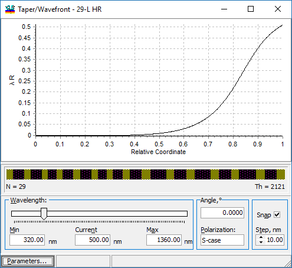
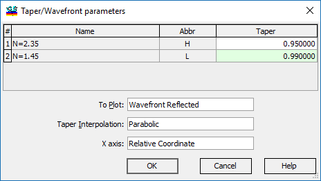
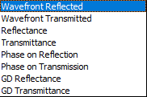
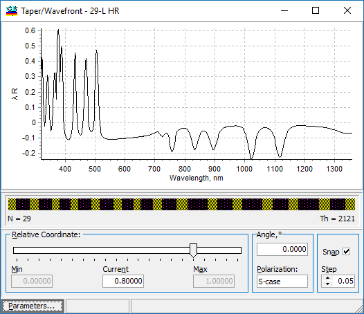
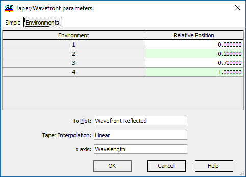

Taper/Wavefront Evaluation
Taper/Wavefront Evaluation
Navigation: OptiLayer Menu Commands > Analysis Menu >
Taper/Wavefront Evaluation
` <layer_absorptance.html>`__ ` <idh_menu_analysis.html>`__ ` <additionalevaluationwindows.html>`__
When a multilayer coating is applied to a substrate with noticeable curvature, such as lenses, or if there is significant non-uniformity within the deposition chamber, the intended spectral characteristics of the coating might be compromised. This leads to deviations in both reflectance and transmittance from their theoretical predictions, as well as inducing wavefront distortions. For instance, consider plotting the wavefront distortions (relative to the wavelength) for a high reflector used in Example LEC03D3, at the wavelength of 500 nm. Assume parabolic thickness non-uniformity from the center to the edge of the substrate, with corresponding taper coefficients of 0.95 and 0.99 for high- and low-index materials, respectively. This visual representation would illustrate the impact of non-uniform deposition on the optical performance of the coated lens.

The wavelength can be adjusted either through a slider or by directly entering values in the current entry field. It is also possible to specify the angle of incidence, polarization, and the step increment for the wavelength control slider. Thickness non-uniformity is modeled using taper factors, as detailed under the Taper Function topic. The method by which these taper coefficients are incorporated during the evaluation is managed through the “Parameters…” dialog, which can be accessed and adjusted as needed.

If only one environment is defined for the current problem, the Taper/Wavefront parameters dialog allows you to specify the Taper coefficients for each layer material at extreme positions (such as the edges of the lens surface). To Plot combobox includes the following characteristics:

The taper coefficient values for intermediate positions are computed according to the Taper Interpolation selection: Parabolic or Linear, and the coefficients at the initial position (for example, the centers of the lenses) are equal to 1.0. The selected characteristic is plotted (x-axis) as a function of the Relative Coordinate (i.e., from the lens center to the lens edge) or the Wavelength. If the Wavelength is selected as the x-axis variable in the Taper/Wavefront parameters dialog, the evaluation window looks different:

In this case, the slider or the Current entry field controls the Relative Coordinate. If Taper Coefficients are specified with the Environments Manager, they can be used in the Taper/Wavefront Evaluation. In this case, the Taper/Wavefront parameters dialog has an additional tab: Environments.

In this scenario, where four distinct environments are configured, it is necessary to specify the Relative Position for each environment. This positioning uses a coordinate system that extends from the center to the edge of the lens. The taper coefficients for each position are obtained from the configurations of the environments, and linear interpolation is used for intermediate positions. It should be noted that parabolic settings are not available when specifying environments. The rest of the dialog is similar to the Simple case described above.